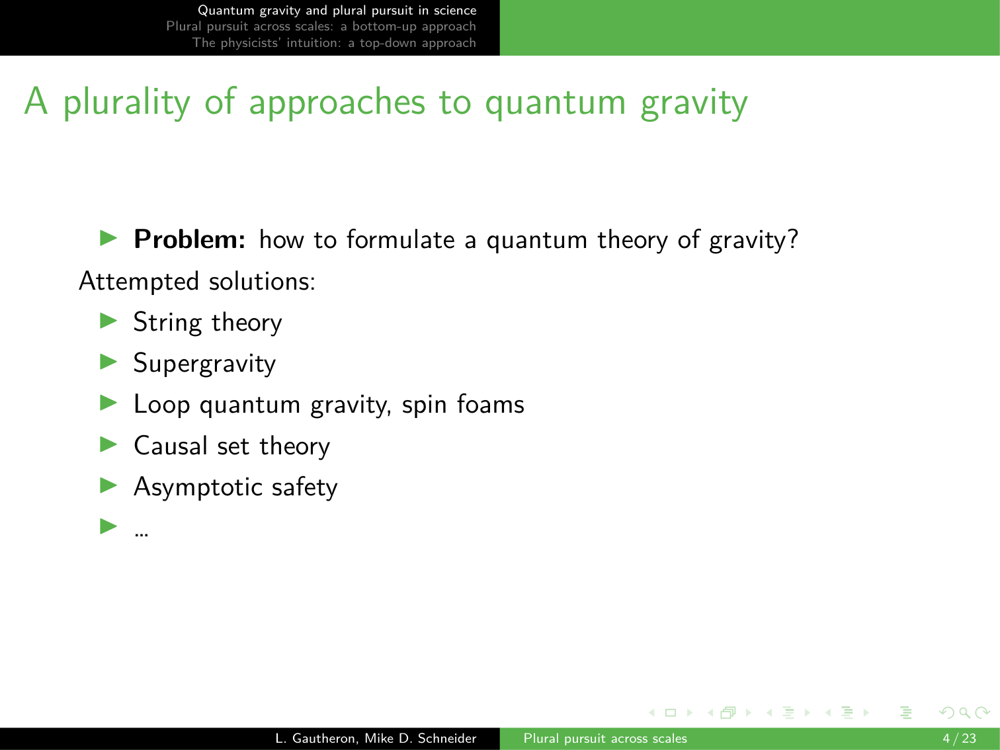
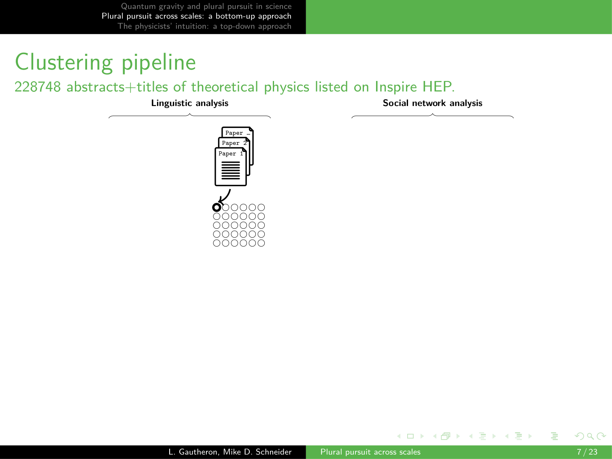

13 Plural Pursuit: The Case of Quantum Gravity
Overview
This research introduces a novel computational framework to analyse the structure of scientific fields, employing quantum gravity as its primary case study. The authors developed a dual-pronged approach to map the research landscape, contrasting a bottom-up, data-driven reconstruction with a top-down model derived from the intuition of expert physicists.
The bottom-up analysis draws upon a corpus of approximately 200,000 abstracts and titles from the literature of fundamental physics. It combines linguistic analysis, using the Bertopic pipeline to identify fine-grained intellectual topics, with a social network analysis of a co-authorship graph of 30,000 physicists to detect research communities. A central challenge the authors address is the inherent scale-dependency of concepts like ‘topics’ and ‘communities’. To resolve this, they implemented a hierarchical clustering method for both structures and an adaptive coarse-graining strategy guided by the Minimum Description Length (MDL) criterion. This technique optimises the topic structure by balancing its descriptive complexity against its power to explain the social network.
For the top-down approach, the team surveyed founding members of the International Society for Quantum Gravity to compile a list of recognised research programmes. A supervised classifier, trained on hand-coded labels, then categorised papers according to this expert-defined structure. By confronting these two perspectives, the study reveals a complex, multi-scale, and nested research landscape, rather than a simple model of ‘plural pursuit’. It confirms expert intuitions, for instance, regarding the tight integration of the string theory and supergravity communities, whilst providing a robust, scalable methodology for exploring the socio-epistemic dynamics of science.
13.1 Quantum Gravity and Plural Pursuit

A long-standing challenge in fundamental physics centres on formulating a quantum theory of gravity, a unified framework intended to reconcile our understanding of phenomena at both the smallest and the largest scales. Physicists have proposed numerous solutions to this problem, amongst which string theory is the most prominent. To analyse a situation where many different research avenues are explored simultaneously, the authors introduce the conceptual framework of ‘plural pursuit’.
13.2 Defining Plural Pursuit

The project formally defines ‘plural pursuit’ as a situation characterised by distinct yet concurrent instances of ‘normal science’ that share a common problem-solving objective; in this case, the reconciliation of quantum mechanics and gravitation. Each instance of this normal science, the authors propose, should be articulated by a distinct social community that adheres to a particular intellectual disciplinary matrix.
This concept synthesises established philosophical frameworks, including Kuhn’s paradigms, Laudan’s research traditions, and Lakatos’s research programmes. Consequently, the investigation frames a central empirical question: does the field of quantum gravity research actually constitute an instance of plural pursuit, comprising independent communities that pursue different paradigms in parallel?
13.3 A Dual-Methodology Pipeline

To conduct their analysis, the authors gathered a substantial dataset of around 200,000 abstracts and titles from the literature of fundamental physics. They then proceeded with a two-step methodology.
The first step involved a linguistic analysis of the field’s intellectual structure, for which they relied on the Bertopic pipeline. This process begins by spatialising the documents into an embedding space, upon which the team performs unsupervised clustering at a very fine-grained level. Such granularity, which yields 600 distinct topics, proves essential for identifying niche research approaches that may only encompass around 100 papers. Based on this classification, each physicist can be assigned a specialty corresponding to the most frequent topic in their publications, creating a partition of authors according to the intellectual structure.
In parallel, the second step performs a social network analysis. The authors constructed a co-authorship graph where nodes represent 30,000 physicists and edges signify co-authorship. Applying a community detection method to this network, they identified approximately 800 distinct communities. This provides an alternative partition of the authors, this time reflecting the social structure of the field.
13.4 Conceptualising Plural Pursuit

Within the analytical framework constructed by the authors, the concept of plural pursuit translates into an intuitive, idealised model: a one-to-one mapping between social communities and intellectual topics.
If this relationship were visualised in a correlation matrix, with communities on one axis and topics on the other, a perfect instance of plural pursuit would manifest as a clean, diagonal pattern. Such a structure would signify a clear division of labour, where each community dedicates its efforts exclusively to a single, distinct topic.
13.5 The Challenge of Scale

When applied directly to the fine-grained partitions of the field, the correlation matrix reveals a convoluted and complex structure that is difficult to interpret. This complexity arises from several underlying issues.
Firstly, the level of fine-graining in the topic partition is somewhat arbitrary; a broad research area like string theory, for instance, might be scattered across numerous smaller topics. Secondly, community formation is influenced by many micro-social processes, which can result in large research programmes being pursued by several distinct communities simultaneously. These challenges point towards a more fundamental problem: the computational definitions of ‘topic’ and ‘community’ are inherently scale-dependent. Moreover, research programmes are often nested conceptually, with families and subfamilies of inquiry, further complicating any attempt at a simple, flat classification.
13.6 Hierarchical Reconstruction

To address the issue of scale, the authors propose a hierarchical reconstruction of the quantum gravity research landscape. For the intellectual structure, they begin with the 600 fine-grained topics and progressively merge them using an agglomerative clustering technique to build a topic hierarchy.
For the social structure, they employ a hierarchical stochastic block model from the start, a method that learns a multi-level partition of the co-authorship network into increasingly coarse communities. These hierarchical models effectively introduce a notion of scale, enabling the system to be observed at various levels of granularity. One can, for instance, colour the co-authorship network according to topic specialties at different levels of the linguistic hierarchy. Nevertheless, the problem of arbitrariness persists, as it is not yet clear which scale should be chosen for analysing either structure.
13.7 The Arbitrariness of Scale

The freedom to select an observational scale for the topic and community hierarchies presents a significant challenge. Depending on the level of granularity chosen for each structure, the resulting correlation matrix will look markedly different. Consequently, this arbitrary choice can lead to very different narratives and conclusions about the organisation of the quantum gravity field.
13.8 An Adaptive Coarse-Graining Strategy

To select an appropriate analytical scale, the authors developed an adaptive topic coarse-graining strategy. The core idea is to systematically remove degrees of freedom from the fine-grained topic partition by merging topics whose linguistic distinctions have no discernible impact on scientists’ collaborative behaviour.
This process is guided by the Minimum Description Length (MDL) criterion, an information-theoretic principle. The MDL criterion seeks a partition that optimally balances two competing factors: its power to explain the social structure of the field and its own simplicity. In practice, the algorithm navigates the hierarchical tree of 600 topics, progressively coarse-graining the structure. It stops when adding further complexity—that is, maintaining finer topic distinctions—no longer provides a worthwhile gain in information about the social network.
This procedure effectively reduces the initial 600 topics to a more meaningful set of 50. Crucially, some small, niche topics are preserved because they correspond to genuine social divisions, whilst many others are consolidated into larger intellectual domains.
13.9 Labelling the Topic Landscape

Following the coarse-graining procedure, the resulting 50 topics are assigned descriptive labels by retrieving representative n-grams from their constituent papers. This step renders the computationally derived clusters interpretable. With this manageable and meaningful topic landscape, the analysis can then be narrowed to focus specifically on those topics clearly related to quantum gravity research.
13.10 Mapping Topics to Communities

With a refined set of topics, the analysis returns to the correlation matrix to match these intellectual structures with social communities across different scales. For each of the 50 topics, the authors identify the community level in the social hierarchy that best explains it. The results are varied.
Some topics, such as string theory, map very well to a specific community structure, in this case at the third level of the hierarchy. In contrast, other research programmes like loop quantum gravity appear to be tied to communities at a much more fine-grained level. Furthermore, some very large topics are not associated with any single community, suggesting they represent concepts of general interest across the field.
Ultimately, the landscape does not reflect a clear case of plural pursuit. Instead, the analysis reveals nested structures—for example, a small community focused on holography that is part of the larger string theory community—and entangled scales, demonstrating a complex interplay rather than a clean division of labour.
13.11 A Top-Down, Expert-Led Approach

To complement their bottom-up analysis, the authors implemented a top-down approach grounded in expert knowledge. They surveyed the founding members of the International Society for Quantum Gravity, asking them to list the research approaches they believe structure the field.
Although the experts did not all agree, their feedback was synthesised into a detailed list of programmes that partition the landscape. For the subsequent analysis, the investigation focuses on three of these: string theory, supergravity, and holography. This particular trio was selected because of an interesting disagreement amongst the physicists themselves about whether these should be treated as separate approaches. Some contend that supergravity and holography are fundamentally aspects of string theory, despite their distinct historical and conceptual origins.
13.12 Confronting the Models

Based on the expert-derived list, the authors trained a classifier to automatically assign papers to these top-down categories. Using the all-MiniLM-L6-v2 model on text embeddings of titles and abstracts, and training it with hand-coded labels, they could predict which papers belong to each approach.
The output of this supervised, top-down classification was then confronted with the results of the unsupervised, bottom-up reconstruction. This comparison yielded a key insight: the two models align well for approaches that are conceptually autonomous and well-defined. Conversely, the correspondence is poor for approaches that are more phenomenological in nature or do not represent fully-fledged conceptual frameworks. Notably, the bottom-up analysis generated a single, large string theory cluster that appears to encompass what experts separately labelled as ‘supergravity’ and ‘string theory’, thereby computationally reflecting the very ambiguity the physicists had expressed.
13.13 Convergence of Views

The computational findings converge with direct expert testimony. One physicist commented that the community of researchers working on supergravity as a standalone theory is likely very small. The practical overlap of personnel working on both supergravity and string theory is so large that, in their view, the two communities cannot be separated in any meaningful way.
This assessment perfectly mirrors the outcome of the bottom-up model. After the MDL-based procedure strips away linguistic nuances that lack social consequences, the model consolidates these two areas. This occurs despite the fact that the initial, fine-grained linguistic analysis correctly identified them as conceptually distinct clusters.
13.14 Conclusion: Computation as an Extension of Philosophy

The research yields several key conclusions. Firstly, it demonstrates that socio-epistemic systems must be observed at multiple scales, as core concepts like ‘community’ and ‘disciplinary matrix’ are inherently scale-dependent. Secondly, identifying configurations of plural pursuit—the one-to-one mapping of communities to their intellectual foundations—necessitates methods that can match these structures across different scales.
For the specific case of quantum gravity, the bottom-up reconstruction of the research landscape serves to either confirm or challenge the intuitions of physicists about their own field. More broadly, this work shows how powerful computational methods can enable us to revisit and test philosophical insights, such as the nature of a paradigm, that have long relied on intuition alone. In this spirit, the presentation concludes with a paraphrase of Clausewitz: computation is the continuation of philosophy by other means.